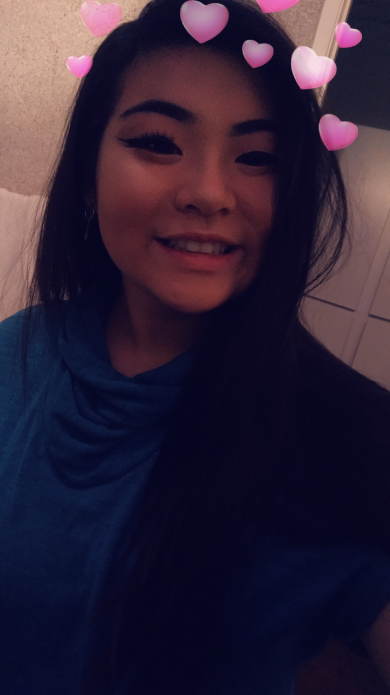
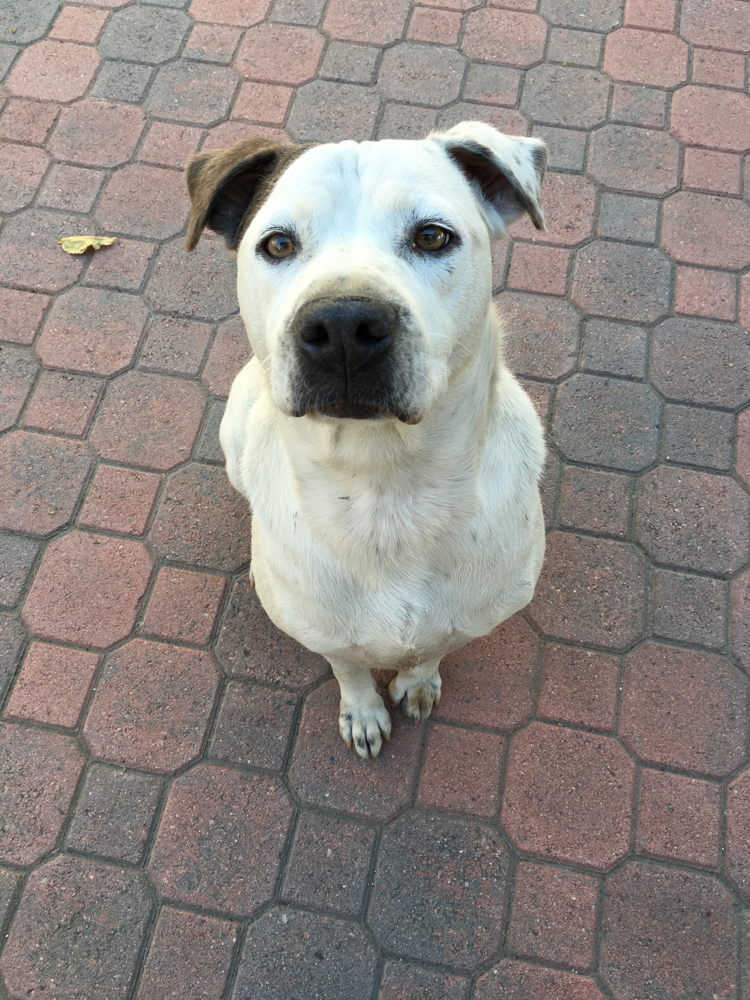
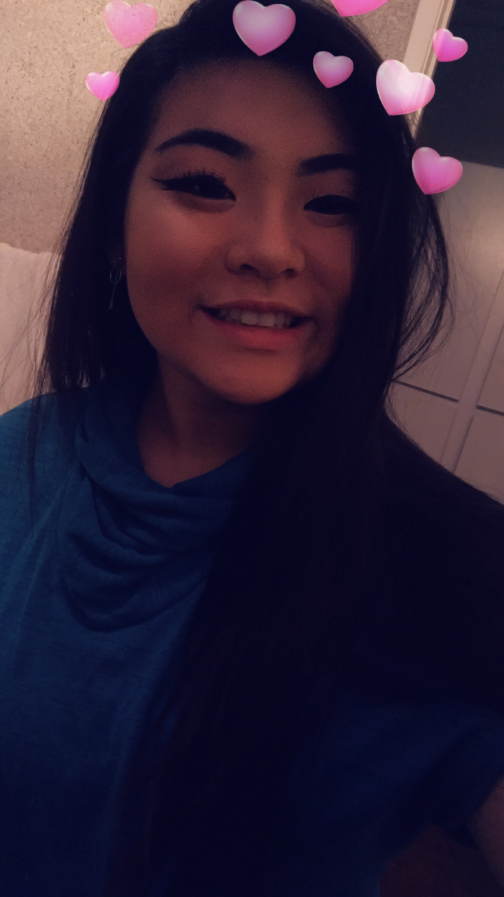
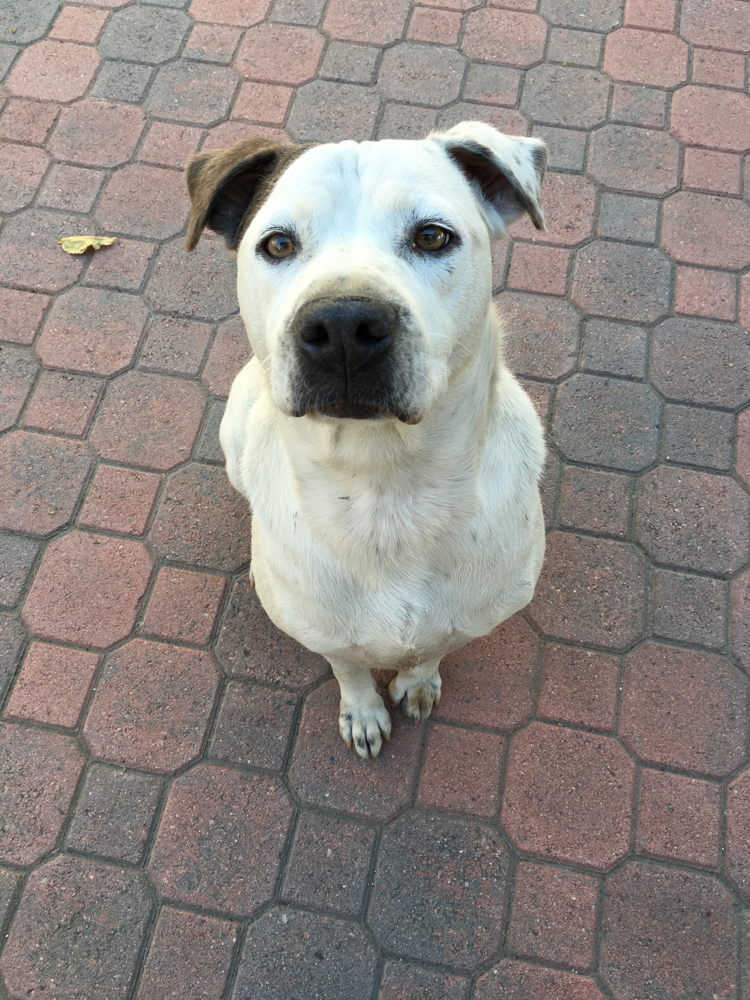
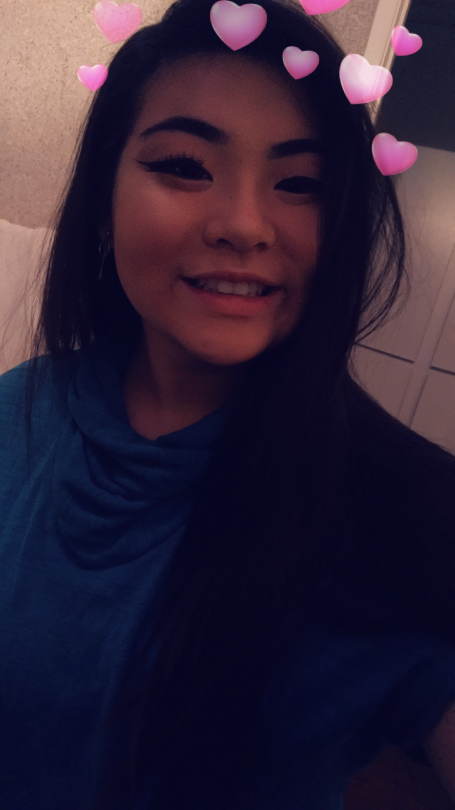
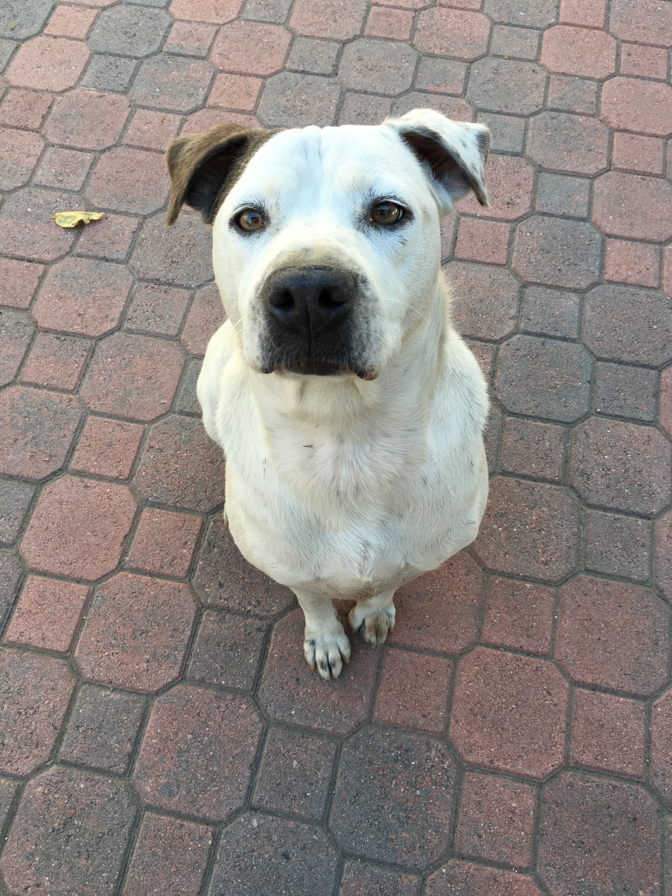

Hi, my name is Ellen and I am a Junior, 11th grade.
Something interesting about me is that
I'm part Chinese, Vietnamese, and Canadian. I know
five languages, and my eye colour changes
between hazel brown, green, and grey. I'm in
two sports, Water Polo and Swimming.
I'm looking forwards to both of the sport seasons.
My goal for the future is to go to Penn State's medical program.
What I like about school is AP Biology and Math.
I also have two dogs named Cody and Carly.
Cody is a Golden
Retriever mixed with a Poodle and
I have had him for 10 years, but he is 14 years old.
Carly is a Pitbull
mixed with a Dalmatian and I have had
her for 8 years and she is 9 years old.


The quote above is one of my favorite quote because
three years ago, as a freshmen on the varsity swim team,
I was very scared because I had absolutely no clue what
I was doing, but my coach had an hour long talk with
me because I told him that I was completely lost 99% of the time. I
eventually got used to double, 6 A.M and 3 P.M, practices, that dragged
on for two hours, mentally and physically. The quote was one of the many
quotes helped me stay sane for swim, polo, and in my classes in general.
| Class Schedule 2017-2018 | |
|---|---|
| Period 0 | Water Polo |
| Period 1 | Spanish 3P |
| Period 2 | AP Comp Sci Principles |
| Period 3 | English 3P |
| Period 4 | AP U.S History |
| Period 5 | AP Biology |
| Period 6 | Algebra 2P |
background source: Background Picture